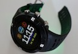

P05 - Social Interaction in Semi-Automated Road Traffic
How does the increasing levels of driving automation change social interaction in semi-automated road traffic, and how does the integration of sensor-driven media open up new possibilities to understand, design and evaluate such interactions? The unique focus of our approach is that interaction is viewed as a cooperative reality between all road users, cars, sensors, and their environments. Funded by the DFG, as part of the SFB 1187.WASEDO: Wearable-federated, weakly-supervised Activity Sensing through Egocentric Detection of Objects
The goal of this project is to develop fundamental methodology for tackling the problem of the lack of training data for the analysis of data from wrist-worn sensorics with deep neural networks. Funded by the DFG.Privacy-aware embodied behavior planning and generation
This project will develop a conceptual and technical framework toward a privacy-aware behavior planner, which allows social robotic mediators to estimate the privacy impact of planned mediation, moderation or intervention activities, and allows to modulate mediation strategies to reduce or avoid privacy risks under consideration of utility factors. Funded by Honda Research Institute.Methode zur Auslegung von Formwerkzeugen zum Rotationszugbiegen von Bogen-in- Bogen Geometrien
Das übergeordnete Ziel dieses Forschungsprojektes besteht in der Entwicklung einer datengetriebenen Auslegungsmethode für die Wirkflächen von Formwerkzeugen beim Rotationszugbiegen von Bogen-in-Bogen Geometrien, sodass robustere Prozesse entstehen. An SPP2422 project sponsored by the DFG.

ActiVAtE_Prevention
This project examines physical activity for study participants with and without type II diabetes diagnosis over one year. The collected data is transferred, merged, processed and evaluated with the help of inferential statistical and exploratory data mining processes. VolkswagenStiftung VW ZN3426.PervaSafe Computing
The PervaSafe focuses on combining the safety-critical requirements and system aspects of control rooms, using human-centred design processes and wearable sensing. An SPP2199 project sponsored by the DFG.AfricaSign
Research project with Professor Soudi to digitize African sign language using mobile sensing and crowd sourcing. Funded by the BMBF German-African Innovation Incentive Award.Long-term activity recognition
Activities play a key role in the way we structure our lives. The type of activity, how it is performed, and with whom, can reveal a person's intention, habit, fitness, state of mind, and social connectedness; This project aims at detecting a person's activities continuously over weeks and months, using a small and wrist-worn sensor unit. An Emmy Noether Project sponsored by the DFG.MinIAttention
This project tackles the challenge of attention and cognitive load of surgeons in minimally invasive surgical procedures. Its goals are to model, sense and act upon attention in the operation theatre of the future, with endoscopes acting as attention-driven assistants for the surgeons. Funded by the FFG (Austrian Research Promotion Agency).Ambulatory smoking detection
Tobacco is the only legally available consumer product which kills people when entirely used as intended. This project is about quantifying one's personal smoking behaviour in an inconspicuous way. A smoker can gain insight into his smoking triggers, gain more insights about his addiction and get personalized smoking cessation material.Grasped object detection
For many tasks, combining the knowledge of what objects were grasped with what gestures were made with them can improve recognition of said tasks considerably. In this project we intend to look deeper in the combination of two relatively cheap technologies that enable identifying objects and interactions with these objects.Train spotting
Recognising passing trains by their vibration signatures, by means of a network of small and easy-to-install inertial sensor nodes with embedded detection capabilities. The nodes together form a wireless sensor network that embeds the detection algorithms. With kind support from Deutsche Bahn.